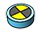
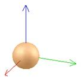

|
Dummies A dummy is an instance of type dummy, which derives from type sceneObject. It is the simplest scene object available: it is a point with orientation, and it can be seen as a reference frame. Dummies are multipurpose or helper objects: they are used alone to identify specific points or reference frames in the scene, they are also used in pairs to specify loop closures or tip-target relationships for dynamics or kinematics calculations. Following figure shows a dummy:  [Dummy] Dummies are collidable, measurable and detectable objects. This means that dummies: By default, the collidable, measurable and detectable property of a dummy is turned off (see the general scene object properties dialog) and refer also to sceneObject.collidable, sceneObject.measurable and sceneObject.detectable. See also sceneObject:checkCollision, collection:checkCollision, sceneObject:checkDistance, collection:checkDistance and proximitySensor:checkSensor. Dummies can be added to the scene with [Add > Dummy], or created from a shape object in the vertex edit mode. Refer also to sim.scene:createObject and dummy-related methods and properties. |